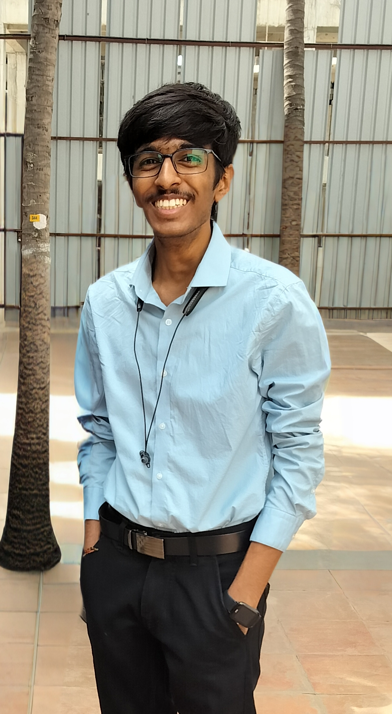

Software Engineer · AI Systems
Building AI systems that make it to production — not just a demo.
Computer Science graduate (R.V. College of Engineering, 2025) currently shipping AI-driven support automation at Saviynt. I work across the full stack — Python/Java backends, AWS infrastructure, and RAG/agentic AI pipelines — and care most about the part after the prototype, where something has to run reliably and actually save people time.

About
A quick snapshot
The short version: I graduated in CS, I've spent the last year and a half building AI products used by real customers, and I'm most energized by the unglamorous work of making a system actually reliable.
Experience
Where I've worked
Four roles building AI and web systems for real users — not just coursework.
- Launched an AI-assisted initial-response workflow for Diamond and high-value UK customers; 100% of cases have met the initial-response SLA criteria since launch.
- Launched a Bedrock-powered assistant that helps the forum team draft community responses; it has supported replies to around 25 posts and received 5–7 kudos since going live.
- Architected an AI-powered RCA generation platform, cutting customer-facing report creation time from days to under 20 seconds while enforcing secure handling of sensitive data.
- Designed a multi-agent support automation system with 7+ AI agents, reaching a 34% autonomous resolution rate in phased rollout and cutting first-response time from ~4 hours to under 5 minutes.
- Built an AI-driven ticket intelligence platform automating sentiment analysis, customer health reporting, and root-cause correlation across enterprise support workflows.
- Developed serverless SLA monitoring and productivity automation, reducing SLA breaches through proactive escalation.
- Built an AI log classification pipeline using LLM summarization, OpenSearch, and NV-Embed embeddings to categorize router failures at 90% accuracy, cutting manual triage effort by half.
- Optimized log analytics for 100K+ records with FastAPI concurrency and caching, dropping API latency from 800ms to 150ms.
- Led development of a Flask–MySQL platform that replaced Excel-based outcome assessment workflows, automating data collection, calculations, and reporting for faculty across departments.
Projects
Things I've built
A mix of applied AI, systems, and full-stack projects — most with code you can go read.
Microservice-based PDF assistant using Spring Boot, Redis, OCR, and Pinecone vector search, with FLAN‑T5‑powered RAG pipelines enabling document Q&A and web fallback via the Tavily API.
Containerized FastAPI platform integrating MistralAI, LangChain, MongoDB, Redis, and ChromaDB to support semantic retrieval and conversational patent analysis.
Genetic algorithm-driven feature selection pipeline that improved intrusion detection accuracy from 85% to 92%, paired with a Gaussian Naive Bayes classifier for low-latency threat prediction.
Co-authored a ReactJS–Flask–Firebase platform enabling real-time sports analytics, visualization, and live match insights for players, coaches, and spectators. Published, ISBN 978-93-5877-507-5.
Skills
Tools I work with
Grouped by how I actually use them day to day.
Education & Research
Background
Bachelor of Engineering, Computer Science and Engineering
Co-authored a ReactJS–Flask–Firebase platform enabling real-time sports analytics and live match insights for players, coaches, and spectators.
View repository →Contact
Let's build something worth shipping.
Open to new grad software engineering and AI roles. Reach out — I usually reply within a day.